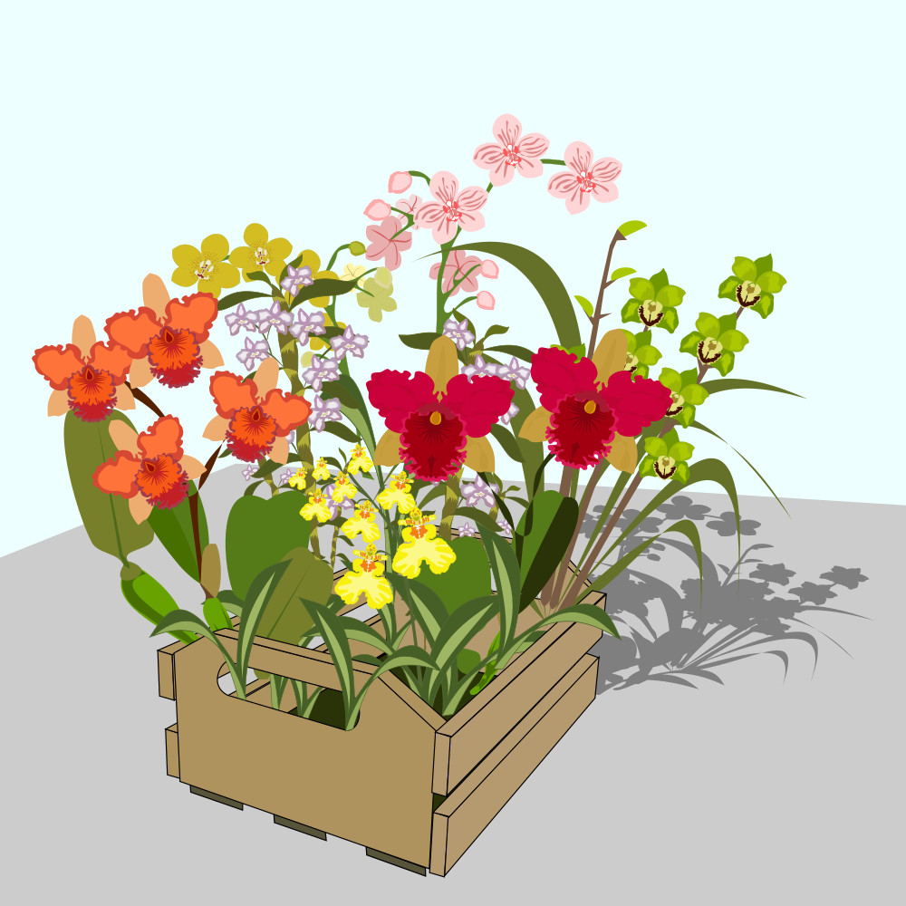
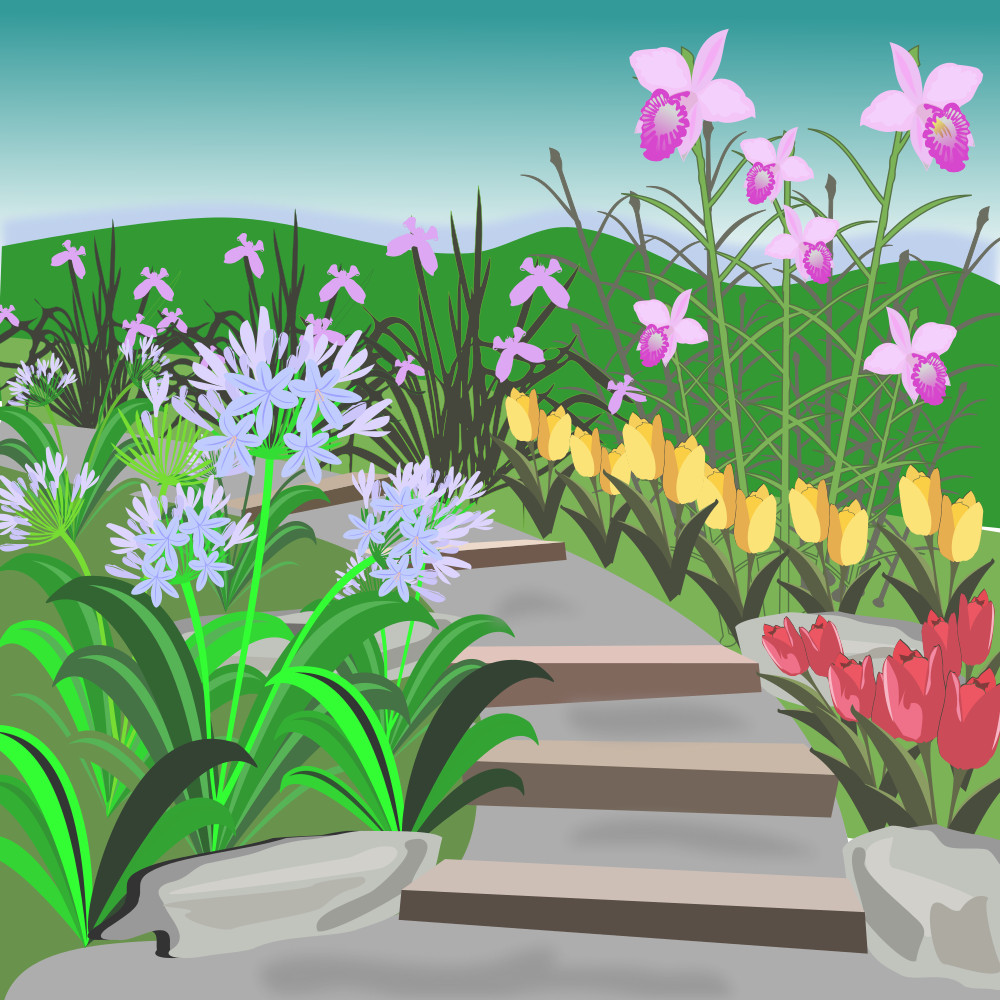
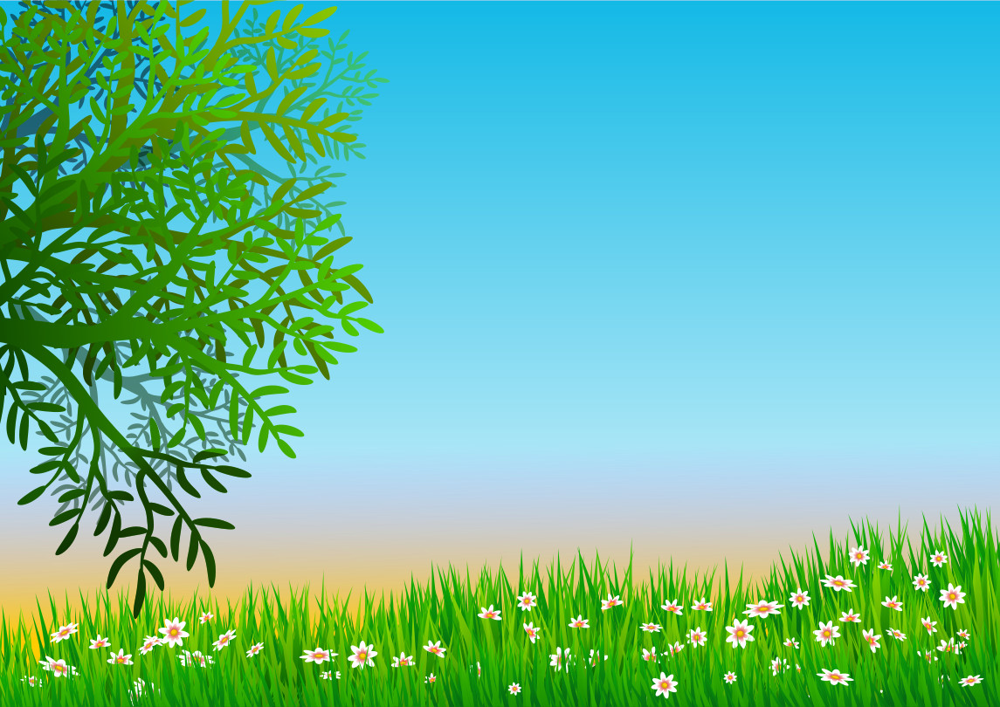
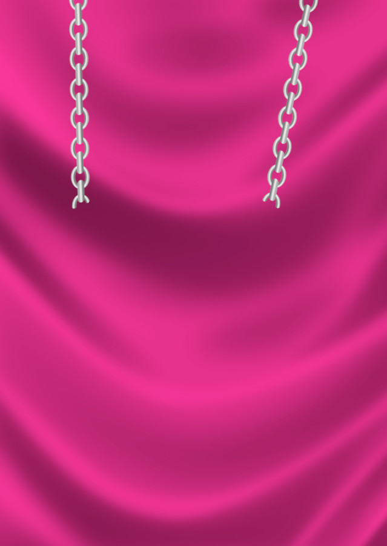
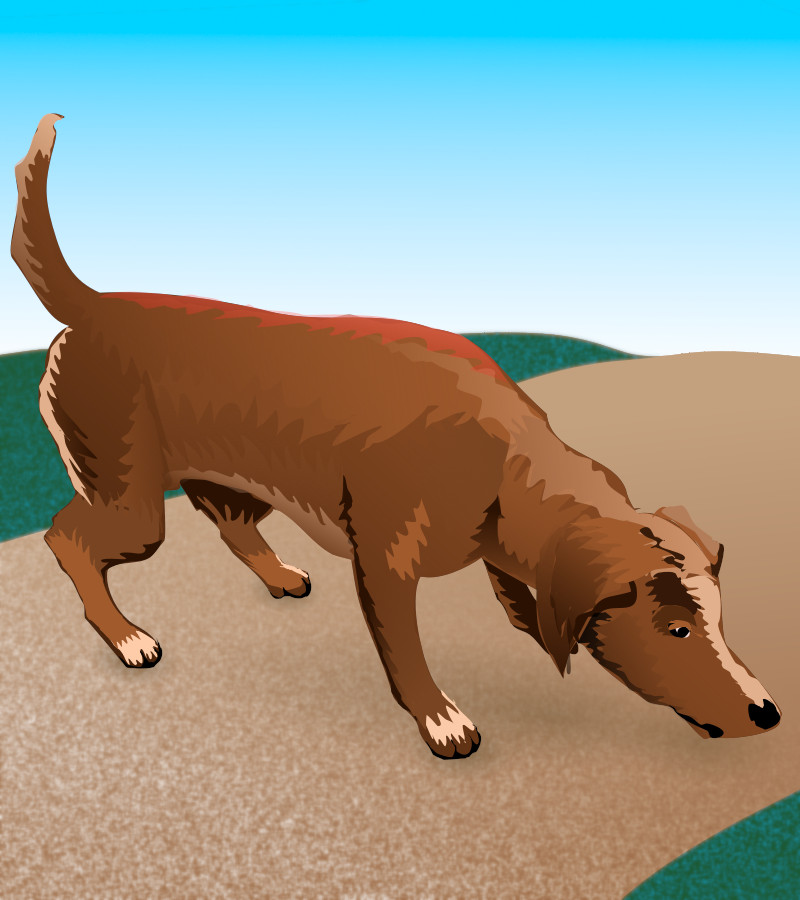
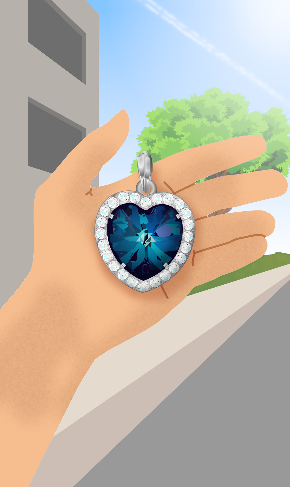
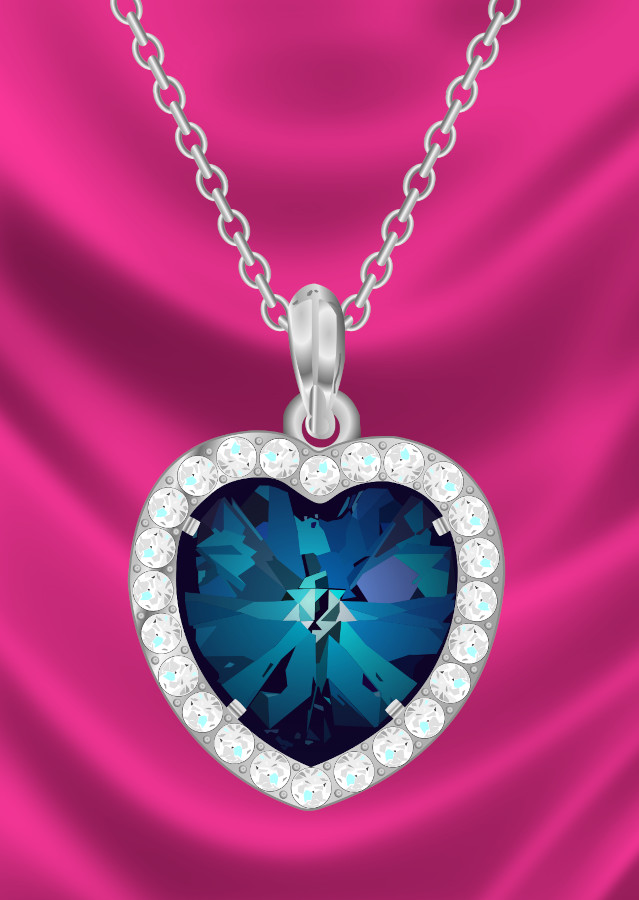

kulupu sona
15:43jan Lukelon, taso ni li wile e pali aaa
15:43jan Kolia a
15:44jan Mokenesina toki e lipu seme
15:47jan Nujakujan Toteke li pakala e tenpo mi
15:56jan LukejMokene o, jToteke li pana e lipu suli tawa mi
15:56jan Lukenanpa mute li lon ona
15:57jan LukejToteke en nanpa li wile nanpa e mi
15:57jan Mokenenanpa
15:58jan Mokenepakala
15:58jan Mokenenanpa li pakala suli
15:58jan Lukelon
16:01miike li suli pi ale ala!
16:01milipu li suli
16:02mitaso jan Toteke la mi o lukin e open taso
16:02jan Mokenepakala pakala
16:02mimi o pali e pali open wan taso
16:03mitaso awen la jan Toteke li pona ala
tomo poka
07:33ko Ojemama li awen lape ·
07:33pakala Mokenesuwi
07:33pakala Mokenemi kin li wile awen lape
07:34ko Ojemi open e tawa mi ·
07:34pakala Mokenemi ken kama
07:34pakala Mokenetaso mi ken kama ala kin
07:36linja Winlasina kama ala la lawa li alasa e sina
07:38pakala Mokenelawa li ken pakala
07:38lawa o pakala
11:29tonsi Unlihttps://www.youtube.com/watch?v=uf4psPeNDqg Toki Pona Caramelldansen / ｳｯｰｳｯｰｳﾏｳﾏ (ﾟ∀ﾟ)【ft. Tsurumaki Maki Lite】
11:29tonsi Unlili toki e kalama ni
11:30tonsi Unlisina lon tomo sina la, o kute
11:31pakala Mokenepona
14:55ko Ojeuma uma!
14:56nimi NujakuUMA UMA A A
15:00pakala Mokenea a pona
15:00pakala Mokenetaso jan Usawi li wawa li anpa e kalama ale
15:01linja Winlasina toki sama lon tenpo ale
15:01pakala Mokenemi toki lon
15:05nimi Nujakuala li ken anpa e ka Maka
15:06pakala Mokenesina wike toki nasa taso
15:06nimi Nujakuona li toki suwi
15:06pakala Mokenesuwi ala
15:07nimi Nujakukepeken toki sike: sina sona ala a
15:07nimi Nujakukepeken toki sike: sona sina li kama lon toki sike la
15:07nimi Nujakukepeken toki sike: sina ken sona e suwi pi toki sike
15:07nimi Nujakukepeken toki sike: ale sina li kama pona tan ona
15:08pakala Mokenepakala ike a
15:08nimi Nujakukepeken toki sike: SINA WILE E PILIN IKE LON MI
15:08pakala Mokenetan seme la ona li sama ni
15:08nimi Nujakukepeken toki sike: SINA KEN ALA PINI E MI
15:08pakala Mokeneo pini e ona
15:09ko Ojeolin Nujaku ooooooooo ···
15:09nimi Nujakumi pini
15:09ko Ojepona ·
15:09ko Ojepakala Mokene kin o ·
15:10pakala Mokenemi utala ala
15:10ko Oje😐
16:02linja Winlamama mi ale li tawa weka
16:02linja Winlaona li awen ala lon poka mi la ona li wile ala pana e pilin ike tawa mi
16:02pakala Mokenea
16:03linja Winlasama tenpo ale la ona li pana e ijo tawa mi
16:04linja Winlao lukin
16:04linja Winla
16:04pakala MokeneA SEME
16:04nimi Nujakuwawa
16:04ko Ojekiwen ·
16:04ko Ojeni li kiwen ·
16:04pakala Mokenepakala Mokene li pana e sitelen nasa mute pi toki ala
16:05ko Ojekiwen a ·
16:06mitaso sina pilin seme
16:06linja Winlaona li mani a li mani mute
16:07pakala Mokenemi pana e sitelen ni tawa kulupu ante
kulupu sona
16:07jan Mokene
16:07jan Mokenejan Winla li kama jo e ijo mani
kasi pi ma mi
15:40meli Kanja

15:55lili Elaneo awen sona: ma suli kasi li awen open, taso kulupu ma li jo e mani lili. ni la jan pi mute ala li ken lon insa. sina ken la, o pana e mani tawa kulupu.
lawa li awen e ni lon sewi
19:33jan Polanpa

tenpo lape
08:09lili Elane

16:07jan Mokene
lawa li weka e ni
16:07jan Mokene
lawa li weka e ni
16:08meli Kanjani li sitelen kasi ala
16:08meli Kanjajan Mokene o
🤣 sitelen L ijo nasa
22:44ijo Esenjan Toteke li ni la
22:44ijo Esenona li kama anpa a a
22:45jelo Asenloooooon
tenpo lape
16:07jan Mokene
16:07jan Mokenejan Winla li kama jo e ijo mani
12:44jan Janalipu ni la sitelen tu li ken kama wan lon nasin pi kulupu Uniko. ona li kepeken nasin ilo pi tenpo pini. ilo li pana e sitelen la ilo li tawa e lipu. ni la sitelen li ken kama lon poka pi sitelen ante. lipu li tawa ala la sitelen sin li kama lon a sitelen ante. ni li ken pakala. taso ni li ken pakala ala kin. kepeken nasin ni pi tawa ala la jan li ken namako e sitelen wan kepeken sitelen ante. sitelen tu li kama wan 26139 Proposal to encode COMPOSE L2/26-139 2026-04-20 Auth…
12:51jan Janataso ni li pona ala pona tawa nasin pi mi kulupu? pilin mi la ni li sama ala ijo pi wile mi. sitelen nanpa tu li kama lon sitelen nanpa wan la sitelen nanpa wan li awen sama. mi wile wan e sitelen tu lon nasin sitelen pi mi kulupu la sitelen nanpa wan o kama suli anu ante
13:35ken Kantonejan Jana o. sina pana pona e sona pona
tenpo lape
16:07jan Mokene
lawa li weka e ni
16:07jan Mokene
lawa li weka e ni
lawa li weka e jan Mokene tan kulupu
nasa Mokene
tenpo lape
tenpo lape
tenpo lape
tenpo lape
tenpo lape
16:09nasa Mokenea
16:10nasa Mokenepakala
16:10nasa Mokenelawa Kantone li weka e mi tan kulupu ona
16:10nasa Mokenesina ken ala ken toki tawa ona
16:12miaa
16:13mimi wile ala
16:14misina pana e ijo pali ala tawa kulupu pali
16:15nasa Mokeneaa lon
16:15nasa Mokenetaso
16:16nasa Mokenemi wile a sona e ijo kulupu
16:17nasa Mokenemi pakala suli lon ni a
16:17nasa Mokenemi ken ala ken ante e pilin sina
16:21mio kute
16:21mikulupu li toki kalama lon tenpo pi weka ala
16:22mimi ken toki tawa ona lon tenpo pi toki kalama
16:23mitaso mi toki e wile sina taso. mi toki wawa ala e ken pi kama sina
16:24nasa Mokenepoooooooooona
16:24nasa Mokenewawa
16:24nasa Mokenesina wawa
kulupu sona
16:08jan Lukea? seme?
16:08akesi Jekoona li ijo sina anu seme a?
16:08jan Kolini li suuuuuwi
16:08jan Kanjaaaaaa
16:09jan Senikamu
16:09akesi Jekoa, ala. ona li ijo pi jan Winla
16:09jan Senikailo li pali e sitelen pi ijo lon ala
16:09jan LukejWinla o, mi ken ala ken luka e kiwen ni?
16:10jan Ojejan Senika o, sitelen li jo e ijo lon · jan Winla li jo e kiwen ni ·
16:10jan Kanjaa, jan Winla o, mi wile e kiwen ni lon sijelo mi
16:10jan Kanjami ken ala ken tawa tomo sina?
16:11jan Lukemi kin li wile tawa tomo sina
16:11jan Senikaseme a! kiwen ni li lon ala lon? ona li mani a
16:12akesi Jekojan ante li tawa tomo ona la mi kin li wile
16:12jan Unliona li wile ala wile e sina ale lon tomo ona? pilin la, ona li wile ala
16:13jan Senikasina ken ala lawa e mi
16:13jan Senikajan Winla taso li ken toki e ken
16:14jan Luketomo ona li lon seme
16:14jan Nujakumi pana ala e sona ni
16:14jan Kolimi esun e kiwen ni la
16:14jan Kolimi ken kama kepeken ala lipu nanpa lon tenpo ale a
16:14jan Lukeseme li sona e tomo ona
16:15jan Ojejan poka taso li sona · jan poka taso o sona ·
16:15misina ale li seme e seme tan seme
16:16misitelen wan taso la sina kama mu
16:16mijan Mokene o, sina pana e sitelen pi jan Winla tawa kulupu ni tawa seme??
16:17jan Winlaa a, sina ale li pilin pona tan kiwen mi
tomo poka
16:08nimi Nujakusina pana ala pana e ona lon sijelo sina
16:08linja Winlapana
16:09linja Winlaona li wawa
16:09linja Winlali wile tawa anpa
16:10pakala Mokeneona li wile tawa anpa la ni li toki e mani suli
16:10linja Winlalon
16:11ko Ojemama sina li jo e mani mute ·
16:11linja Winlami mi. mama mi li mamami
16:12tonsi Unlitoki mute li kama lon kulupu sona
16:12tonsi Unlipakala Mokene li pana e sitelen sina, linja Winla o
16:13pakala Mokenemi pana lon kulupu mute
16:15linja Winlaa?
16:15linja Winlami o kama lukin
16:18linja Winlawawa
16:19linja Winlajan li pilin pona tan ijo mi
16:20linja Winlakiwen li pona
16:20linja Winlataso
16:20linja Winlaona li awen wile tawa anpa
16:21linja Winlakin la mi wile ala jaki e ona
16:21linja Winlami pana sin e ona tawa poki
16:25tonsi Unlimi tawa tomo sina
16:25tonsi Unlimi wile lukin e kiwen sina
16:25linja Winlaala a
16:26linja Winlamama mi li wile awen lon poka mi
16:27tonsi Unlisona
16:32linja Winlalape li pini la ona li weka
16:33linja Winlaweka ona la
16:34linja Winlaa
16:34linja Winlaweka ona la mi ale o lon kulupu sona
16:35linja Winlakulupu li pini la sina ken
16:37tonsi Unliwawa
16:48pakala Mokeneseme li sona e ijo pi nasin nanpa
16:50pakala Mokene“linja tu li lon, li sike a. linja nanpa wan li sike insa li suli mute luka wan. linja nanpa tu li sike selo li suli mute mute tu wan ala mute mute luka luka. linja tu li selo e supa la, supa li sama sike suli, li jo e lupa lon insa. o nanpa e suli pi supa ni.”
16:52pakala Mokeneseme la mi o sona e nasin ni
16:53pakala Mokenemi wile ala e supa lupa
16:56pakala Mokenenanpa o pakala
17:01pakala Mokenekulupu o
17:02mio pana lon kulupu sona lon ala kulupu tomo
17:02pakala Mokenepakala Mokene li pana e sitelen nasa mute pi toki ala
kulupu sona
16:19jan Senikao kama e kiwen sina lon kulupu sona
16:19jan Senikami ale li wile lukin a e ona
16:20jan Kolini li pona a
16:20jan Kolilon, o kama e ona
16:22jan Winlaaa
16:22jan Winlaken ala
16:23jan Mokenesina ken a
16:23jan Winlamama mi li wile ala e ni
16:25jan Lukeo toki tawa mama sina
16:25jan Lukeale li wile lukin
16:26jan Winlaala a
16:27jan Winlami sona a e wile pi mama mi
16:29akesi Jekosina ken jo e ijo mani, taso sina ken ala kepeken ona
16:29akesi Jekonasin pi mama sina li nasa
16:31jan Winlao toki ike ala e mama mi
16:32akesi Jekomi toki e pilin mi taso
16:35jan Lukea lon la ona li kiwen sina anu seme?
16:36jan Lukemi la, ona li ijo sina la, sina, en mama sina ala, o ken lawa e ijo ni
16:37jan Winlao ike ala
16:37jan Winlasina sona ala e mama mi
16:37jan Winlao toki ni ala
16:38jan Winlasina sona e ala
17:05jan Mokenelon, mi sona e ala
17:05jan Mokenee nanpa
17:06jan Mokenepali pi jan Toteke li ike
17:06jan Mokeneseme li ken pana e sona tawa mi
17:09jan Ojesina lukin ala lukin e open lipu?
17:10ala
17:11jan Ojeopen lipu li pana e sona
17:11jan Ojeli toki e nasin
17:12jan Ojesike li suli seme lon ale insa li suli seme lon selo ·
17:13jan Ojeo lukin e ona ·
17:15jan Mokenetaso sina sona ala sona?
17:18jan Ojemi sona · mi pana e nanpa tawa lipu ·
17:19jan Mokenenanpa seme
17:19jan Mokeneo pana e nanpa tawa mi
17:25jan Ojejan Mokene o lukin e lipu · nasin li lon ona ·
17:26jan Ojemi pana ala e nanpa tawa sina ·
17:26jan Ojeala li pana ·
17:28jan Mokeneike
17:35jan Kanjani li sona open taso
17:36jan Kanjasona ante li kama la sina o sona kepeken nasin ni
18:41mi jo e nanpa
18:42jan Mokene204
18:44jan Nujakuni li nanpa ike
18:45jan Nujakusina pakala
18:45jan Nujakuo pali sin e nanpa
18:51ala
18:51jan Mokenemi pali
18:52mi jo e nanpa
18:53jan Mokenejan Toteke li ken ala ike e mi tan ni
19:26akesi Jekotenpo pi toki suli li kama
19:27akesi Jekosina toki e ijo seme?
19:29jan Kanjasina a toki e ijo seme?
19:30akesi Jekoma kasi suli
19:30akesi Jekoona li suwi a
19:31akesi Jekotaso mani li kama lili tawa ona
19:33jan Kolimi toki e mun
19:34jan Senikaa mi kin
19:34jan Senikamun
19:34jan Kolimuuuuuuuuun
19:35jan Senikamuuuuuuuuuuuuuuuuuuun
19:36jan Lukemi sona ala. mi alasa
19:37jan Unlimi sama
21:05jan Nujakumi ken toki e kulupu open pi ma mi
21:07jan Nujakukepeken toki sike: mi ken toki e toki sike kin
mama laso
15:20mama lasonimi “lonsi” li seme?
15:21mama lasomi kute tan jan musi; tenpo ona li sama tenpo sina
15:32mia
15:33mimi sona ala
15:33miona li ken… nimi musi taso
15:34miona li pana e sona seme, mi sona ala
15:36mama lasoa sona
tenpo lape
tenpo lape
tenpo lape
07:51mama lasomama kili li pali lon ma weka
07:52mama lasomama pipi li pali e ijo moku
07:52mama lasopan lipu anu pan sike la sina wile e seme
09:15mipan lipu a
kulupu sona
tenpo lape
09:17jan Ojeale li wile sona e kiwen mani ·
09:17jan Ojetaso o utala ala e jan Winla ·
10:32jan LukejToteke li pilin ike a tan jMokene
10:34jan Kolilon a
jan Oje
21:18jan Ojeuta li pona ·
21:19jan Ojetaso tenpo wan la tonsi Unli li uta e uta pi nimi Nujaku la mi pana e kalama pi telo uta lon tenpo sama la ona tu li tu a li lukin e mi ·
21:21mimusi a a a a
tenpo lape
tenpo lape
11:50jan Ojekulupu li awen toki tawa linja Winla ·
11:50jan Ojetan kiwen ·
11:50jan Ojeni li kama e pilin ike lon ona ·
11:51jan Ojeona li kama toki utala ·
11:51jan Ojekulupu li kama pilin ike ·
11:51jan Ojemi o seme?
11:52misina lawa ala lon kulupu
11:52minasin kulupu li tan ala sina
11:53mitaso mi sona e pilin sina
11:53misina wile ala wile toki tawa jan suli
11:54jan Ojemi sona ala ·
kulupu sona
12:59jan Kanjaa, jan Mokene li weka anu seme
13:00jan Mokeneweka
13:00jan Kanjaa
13:00akesi Jekoseme
13:01jan Mokenejan Toteke li ken ala awen utala e mi
13:01jan Lukesina ken ala weka tan kulupu sona
13:01jan Nujakuaa
13:01jan Mokenemi ken. mi weka
13:02jan Ojetaso sina kama ala kama sin?
13:02jan Mokeneo pakala ala e pilin sina
13:03jan Mokenemi kama sin
13:03jan Mokenetaso tenpo lape o lon insa
13:04jan Kolijan Winla kin li ken weka
13:04jan Ojejan Koli o!
13:05jan Winlaseme la sina awen ike tawa mi
13:05jan Ojeale o pini e utala ni ·
13:05jan Lukesina wile ala kama e kiwen tawa kulupu
13:06jan Lukesina wile ale e kulupu lon kiwen
13:07jan LukejOje li wile ala e toki lon kiwen ni
13:07jan Lukeseme la mi ken kama sona e ijo kiwen
13:08jan Nujakuutala toki ni li pana e pilin ike tawa mi kin
13:09jan Kanjami kin li wile sona e kiwen
13:09jan Kanjataso pilin ike li lon la sona li kama ala
13:10jan Kanjani la mi wile lape e alasa mi
13:11jan Kanjaalasa li ken kama sin lon tenpo pi pilin ike ala
tomo poka
tenpo lape
13:06ko Ojepakala Mokene o, sina weka la sina lon seme?
13:06ko Ojetomo sina anu seme?
13:07pakala Mokenemi ken tawa tomo
13:08tonsi Unlimama sina li ken pilin seme lon ni
13;08tonsi Unlimama mi li ken utala e mi tan nasin ni…
13:09pakala Mokeneni li suli ala tawa mama mi
13:10ko Ojeweka sina li kama sin la lawa li ken utala e mama sina ·
13:11lawa o pakala
14:06ko Ojejan mute li awen pilin ike ·
14:06linja Winlami kin. mi kin li pilin ike
14:07linja Winlaona li toki e ijo wan taso lon tenpo ale
14:07linja Winlakiwen kiwen kiwen kiwen
14:08linja Winlaona li kama toki ala la ona li kama kalama tawa mi
14:08linja Winlakiwen li kama e ike taso
14:09linja Winlamama mi li tawa weka
14:09linja Winlasina toki e ijo musi ala e kiwen taso
14:09linja Winlakulupu li utala e mi
14:10linja Winlakiwen li ante ike e ale
14:10ko Oje🫂
14:11nimi Nujaku🫂olin
14:13tonsi Unli❤️
14:13pakala Mokenemani li lawa e jan
14:15linja Winlami wile tawa tomo mi
14:15linja Winlami wile anpa a lon supa mi
14:16linja Winlataso open la mi o e sune moku
14:17linja Winlamama mi li lon ala la moku li tan pali mi taso
14:18pakala Mokeneesun sina taso
14:18linja Winlao anpa
14:19anpa Mokeneken
nimi Nujaku
19:02nimi Nujakuilo li pana e sitelen lon lipu la sitelen li pimeja taso
19:04mitaso sina ken kama e lipu lon tenpo tu
19:05mianu seme
19:08nimi Nujakumi o alasa e sona tawa pali ni
tenpo lape
tenpo lape
14:14nimi Nujakumi en olin U li tawa tomo pi olin O
14:15nimi Nujakuona O li pilin pakala tan ijo kiwen
14:15nimi Nujakula mi wile suwi e pilin ona
14:19mia a nasin pona
14:21mipilin pona o lon ale
tomo poka
15:48linja WinlaIKE
15:48linja WinlaIKE IKE IKE IKE
15:49ko Ojeseme li ike?
15:50linja WinlaKIWEN MI
15:50linja WinlaO LUKIN
15:50linja Winla

15:51linja Winlaona li WEKA A
15:52anpa Mokenepoki taso
15:52linja WinlaKIWEN MI LI WEKA
15:53ko Ojeseme a
15:53ko Ojekiwen li weka
15:54mia
15:54miona li weka
15:55linja WinlaSEME LA ONA LI WEKA
15:55linja WinlaMI PANA E ONA TAWA POKI ONA
15:56anpa Mokenesina pana ala ala pana e ona tawa ma ante
15:56linja WinlaPANA ALA
15:56linja WinlaSONA SINA LI PAKALA ANU SEME
15:57linja WinlaMI TOKI E NI
15:57linja WinlaMI PANA E ONA TAWA POKI ONA
15:57linja WinlaONA LI WEKA
15:57linja WinlaWEKA AAA
15:58tonsi Unliseme la ona li kama weka
15:58linja Winlami sona ALA A
15:59linja Winlami weka ala e ona
15:59linja Winlamama mi li lon ala tomo
16:00linja Winlajan ante li kama ala kama lon tomo mi??
16:01anpa Mokenesoweli li ken ala ken kama
16:02linja Winlami selo pona e tomo
16:03linja Winlapipi li ken kama
16:04linja Winlataso pipi li lili la ona li ken ala weka e kiwen
16:06anpa Mokenemi sona ala
16:06anpa Mokenepipi li lili
16:06anpa Mokenetaso pipi li ken wawa
16:07linja Winlataso kiwen li suli a
16:07linja Winlapipi li tawa e kiwen la
16:07linja Winlakiwen li tawa seme?
16:08linja Winlaona a li lon ala a tomo mi a
16:09nimi Nujakuike a
kulupu sona
16:06jan Winlaijo ike a li lon
16:07jan Kolilon
16:07jan Kolijan Toteke li pana e lipu sin
16:10jan Winlaijo ante
16:11jan Winlakiwen mi li weka
16:12akesi Jekoseme? weka
16:13jan Winlajan li weka e kiwen tan tomo mi
16:14jan Kolia
16:14jan Kolijan seme
16:15jan Winlami sona ala
16:15jan Winlami kama lon tomo mi la kiwen li weka a
16:17jan Senikaa a
16:18jan Winlani li musi ala a
16:19jan Senikani li musi kin
16:19jan Winlaala
16:19jan Senikakin
16:20jan Senikaopen la sina pana e sitelen
16:20jan Senikataso ona li sitelen taso
16:20jan Winlaseme?!
16:21jan Senikani la jan ante li wile lukin e kiwen
16:21jan Senikataso nasa la sina wile ala ken e ni
16:21jan Senikanasa suli a
16:21jan Winlaike seme li kama lon sina?
16:21jan Winlakin la MI PANA ALA E SITELEN tawa kulupu ni!
16:22jan Senikani la kiwen li weka
16:22jan Senikanasa sin a
16:22jan Winlasina wile toki e seme
16:23jan Ojejan Senika o pona ·
16:23jan Senikasina wile sona e pilin mi
16:24jan Senikani la o kute
16:24jan Senikakiwen mani pi jan Winla li lon ala lon
16:25jan SenikaLON ALA A
16:25jan Senikasitelen kiwen taso li lon
16:26jan Senikailo li pali e sitelen tawa jan Winla
16:26jan Lukeseme
16:26jan Lukeni li ken ala ken
16:27jan Mokenesina ale li nasa
16:28jan WinlaSEME LA SINA IKE TAWA MI
jan Winla li weka tan kulupu
16:28jan Unlia ike
16:28jan Senikaa a
16:28jan OjeA!
16:28jan OjeIKE!
16:29jan Lukeseme li kama
16:29jan Kolisina weka e ona
16:29jan Senika🤷
16:29jan Lukea!
16:30jan Senikaona li weka e ona
16:30jan Senikami ala li weka e ona
16:31jan Kanjapakala wawa
16:33jan Kolimi awen wile sona
16:33jan Kolijan seme li weka e kiwen?
16:34jan Senikakiwen li lon ala
16:34jan Kanjao pini a
16:34jan Lukelon, o pini
16:34jan Lukeni li kama e musi ala e utala taso
tomo poka
16:29linja Winlakulupu li jaki tawa mi
16:30ko Ojejaki a
16:30linja Winlaona li kute ala e toki mi
16:30linja Winlali toki e ike lon mi
16:30linja Winlali toki e ike tawa mi
16:30linja Winlatan mi kin
16:31ko Ojemi ken seme tawa sina
16:33linja Winlami sona ala
16:34linja Winlakiwen mani li kama e ike taso
16:35linja Winlami wile e mama
16:37tonsi Unlimama sina li kama lon tenpo seme
16:39linja Winlalon ala tenpo poka
16:40linja Winlami pilin ike
16:42nimi Nujakutaso nasa li suli lon ni
16:42nimi Nujakujan li weka e kiwen tan tomo sina
16:43nimi Nujakijan seme a
16:45linja Winlami lape e ilo mi
16:46linja Winlapakala ike anu moli suli li kama la
16:46linja Winlasina ale li sona e tomo mi
16:47linja Winlami kin li ken lape
16:47linja Winlami sona ala
16:48milape ilo en lape sina o pona
16:48linja Winlalon
16:48anpa Mokenelape pona
16:49tonsi Unlilape suwi
16:49nimi Nujakulape a
16:50ko Ojepona o lon ale
jan Oje
17:02jan Ojeni
17:02jan Ojeli pakala suli ·
17:03jan Ojeona li weka tan kulupu sona lon ilo ·
17:04milon. mi lukin
17:06jan Ojelon la utala kulupu li ike ·
17:07jan Ojetaso ike ante li lon ·
17:08jan Ojekiwen pi mani suli li weka ·
17:09milon. ni li ike
17:10jan Ojetaso
17:10jan Ojeni li nasa ·
17:11jan Ojeopen la kulupu lili taso li sona e kiwen ·
17:11jan Ojejan mute li kama sona lon tenpo lili ·
17:12minasa ala
17:12mijan Mokene li pana e sitelen tawa kulupu mute
17:13jan Ojea · ijo nasa li ijo ni ala ·
17:14jan Ojejan mute li sona e kiwen ·
17:14jan Ojelon ·
17:14jan Ojetaso
17:15jan Ojejan seme li sona e tomo ona?
17:16mia
17:16milon
17:17mimute ala li sona
17:18jan Ojemute ala ·
17:19jan Ojejan li sona e kiwen
17:19jan Ojee tomo kin la
17:19jan Ojeona ale li lon kulupu pi tomo poka ·
17:21mimi pilin sama
17:22jan Ojemi wile sona:
17:22jan Ojejan seme li weka e kiwen mani?
17:22jan Ojesina o alasa e jan ni ·
17:23miseme
17:23mimi
17:23mimi anu seme
17:24mitan seme la sina toki e mi tawa ni
17:25jan Ojejan li kama sona e kiwen la
17:25jan Ojeona ale li kama mu
17:25jan Ojeli kama toki wile
17:25jan Ojeli kama pilin suli ·
17:26jan Ojetaso sina ni ala ·
17:26jan Ojesina kama ala wile luka e kiwen ·
17:27jan Ojesina kama pilin nasa tan mu pi jan ante ·
17:28jan Ojemi a kin li kama pilin suli tan kiwen ·
17:29jan Ojejan li wile e kiwen la ona li ken kama wile weka e kiwen ·
17:30jan Ojetaso sina ante ·
17:35jan Ojemu ·
17:35jan Ojesina alasa ala alasa?
17:37miaaaaaa
17:38mikiwen li weka la jan li awen utala
17:39mimi alasa e jan pi weka kiwen la
17:39mimi ken lili e utala anu seme
17:40jan Ojeken wawa a ·
17:41jan Ojesuli la sina ken pona e pilin pi jan Winla ·
17:42miken
17:43mimi ken alasa
17:43mimi o toki tawa jan kulupu
17:44jan Ojepona a ·
jan Winla
18:55jan WinlaLA
18:55jan WinlaINSA MI KIN
18:55jan WinlaLA IKE LI
18:56jan WinlaKAMA E WILE UTALA
18:57miseme a a
18:58jan Winlahttps://soundcloud.com/iamdraconium/wile-utala WILE UTALA. DRACONIUM, jan Usawi. kulupu pali: nimi - jan Usawi, jan Mika, akesi Takunijun; kalama uta - jan Usawi, akesi Takonijun; pali - akesi Takonijun
18:58mia lon, pona
tenpo lape
tenpo lape
tenpo lape
tenpo lape
17:46mimu
17:47mimi alasa e sona
17:47misina lape e ilo
17:47mitaso sina open sin e ona la
17:47mio toki tawa mi
nasa Mokene
17:48mimu
17:50nasa Mokeneseme li lon?
17:51misina weka tan kulupu sona
17:51nasa Mokeneweka
17:52mini la sina tawa ala tawa tomo sina
17:53nasa Mokenetawa
17:53nasa Mokenesina wile sona tan seme
17:54mimi alasa taso e sona
17:54mikiwen mani li weka
17:55nasa Mokenea
17:55nasa Mokenesina wile alasa e jan pi weka ona
17:56miwile
17: 57nasa Mokenea
17:58nasa Mokeneaaaaaaaaa
17:58nasa Mokeneo awen
17:58nasa Mokeneo awen
17:59nasa Mokenemi jo ala e kiwen
17:59nasa Mokenekin la mi tawa ala tomo mi
18:00nasa Mokenejan Toteke li ike a e pilin mi
18:00nasa Mokeneni la mi kama ala wile awen
18:01nasa Mokenemi wile ala awen lon kulupu
18:01nasa Mokenemi wile ala awen lon tomo mi
18:02nasa Mokeneni la mi tawa ma kasi
18:03nasa Mokenemi musi lon soweli
18:04nasa Mokeneo lukin
18:05nasa Mokene

18:06nasa Mokenesoweli li pona
18:06nasa Mokenema kasi kin li pona
18:06nasa Mokenekiwen li weka la mi lon ala poka
18:08milon, ona li pona
18:08mini la mi o awen alasa
18:09nasa Mokenealasa pona
jan Oje
18:09mimu
18:09misina sona ala sona e ma kasi suli
18:11jan Ojesona ·
18:11mijan seme li lon ma kasi lon tenpo mute
18:13jan Ojea, jan Elane li pali lon kulupu ona
18:13jan Ojetelo li kama ala tan sewi la ona li wile lon kasi
18:14mipona
lili Elane
jan ni li sin tawa sina
18:16mitoki
18:17mimi alasa e sona
18:17misuno li lon sewi la
18:17misina lon ala lon ma kasi suli
18:21lili Elanea toki
18:21lili Elanemi lon ma kasi
18:22lili Elanesina alasa e sona seme
18:23misina sona ala sona e soweli ni
18:23mi
18:24lili ElaneA
18:24lili Elaneona li soweli olin lili suwi pona mi
18:25misuwi a
18:25misewi suno la jan li kama ala kama lon soweli sina
18:26lili Elanea kama
18:26lili Elaneona en soweli li lon poka li musi
18:27lili Elanejan li tawa e palisa
18:27lili Elanesoweli li kama e palisa tawa jan
18:28lili Elaneona li musi lon tenpo suli
18:28lili Elanemi kama ken pali lon kasi anpa
18:28misina pana e sona pona
18:29lili Elanepona
kulupu sona
18:24jan Kolia, ijo ante
18:25jan Kolilipu sin li tan jan Toteke
18:25jan Koliona li pakala ala pakala
18:27jan Koliona li toki e sike tu wan
18:27jan Kolitaso mi pali la sike tu tu li kama
18:33jan Unlipakala li lon pali sina
18:34jan Unlipali mi la sike tu wan li kama
18:35jan Kolia
jan Unli
18:37mimu
18:38mimi alasa e sona
18:39misina lon seme
18:39misina lon ala lon tomo pi jan Oje
tomo poka
18:39pakala Mokenejan ante li kute aka kute e kalama?
18:41miala
18:41mikalama seme
18:42pakala Mokeneijo li kama pakala
18:43pakala Mokeneni la jan tu li toki utala
18:44ko Ojekute ala ·
jan Oje
18:48misina lon seme
18:50jan Ojemi lon tomo mi ·
18:51mijan Nujaku en jan Unli li lon ala lon sina
18:52jan Ojea ·
18:52jan Ojeala ·
18:52jan Ojeona li tawa ·
18:53mitawa tomo ona anu seme
18:54jan Ojetawa ·
18:55misona
jan Nujaku
17:17jan Nujakuona li pana e toki nasa tawa mi, o awen
17:18jan Nujaku“ju a ma Unli wan, je, ju a ma Unli wan”
17:19miaaa a a a a a a a seme
17:19jan Nujakua a a lon a
tenpo lape
tenpo lape
18:58mimu
18:58mijan Unli li lon ala lon sina?
19:00jan Nujakuala
19:01jan Nujakumi en ona li lon tomo pi olin O lon tenpo poka
19:02jan Nujakutaso mi tu li tawa
19:03jan Nujakumi wan li lon tomo mi
19:05miopen la sina e jan Unli en jan Oje li tawa tomo pi jan Oje li kulupu ala kulupu wan
19:07jan Nujakukulupu wan ala
19:07jan Nujakutu
19:08jan Nujakuolin O li tawa tomo ona li wan
19:08jan Nujakuolin U en mi li
19:08jan Nujakutawa musi
19:08jan Nujakuli wan
19:09mitawa musi anu seme
19:09jan Nujakutawa li lon
19:10jan Nujakumusi kin li lon
19:11mia a
20:15minasa
20:16mimi toki tawa jan Unli
20:16mitaso ona li kama ala toki tawa mi
20:18jan Nujakunasa suli
20:19jan Nujakuona li toki ala tawa mi kin
tomo poka
20:20jan Nujakukulupu o
20:20jan Nujakumi lukin toki tawa olin U
20:21jan Nujakuona li toki ala tawa mi
20:21jan Nujakujan ante li ken ala ken
20:23pakala Mokenemi en ona li toki ala
20:23pakala Mokenela sina ante o ni
20:25ko Ojeseme ·
20:25ko Ojea ···
20:26ko Ojemi kin li pana e toki tawa ona lon tenpo poka ·
20:26ko Ojetaso ona li toki ala ·
20:27ko Ojeni li tan seme ·
jan Oje
20:28jan Ojesina kama ala kama ken toki tawa olin U?
20:29miala
20:29mimi alasa e ijo ni tan jan Nujaku la
20:30mijan Nujaku li alasa e ni tan kulupu pi tomo poka
20:30jan Ojea ·
20:36jan Ojesina awen alasa e nasin weka kiwen anu seme?
20:37miawen
20:38mimi kama sona e ijo
20:38jan Ojea?
20:39mijan Mokene li weka ala e kiwen
20:40mitenpo pi weka kiwen la ona li lon ma kasi
20:40mijan ante li lukin e onalon ma
20:41jan Ojeni li sona pona ·
20:42mimi awen alasa
20:43jan Ojewawa o lon alasa sina
kulupu sona
20:38jan Kolia sina toki e ijo sona
20:39jan Kolimi weka e pakala mi la sike tu wan li lon
20:44akesi Jekoseme la jan Toteke li pana e lipu taso e sona ala tawa mi
20:45akesi Jekomi kama sona tan lipu taso tan ala ona
20:46akesi Jekojan Toteke li tawa kulupu sona tan seme
20:46miona li pana pi pona ala a e sona
20:47jan Kanjalon a
21:02jan Ojekulupu o · jan Unli li toki ala toki tawa sina
21:04jan Lukeala
21:06jan Koliala
21:07akesi Jekoala… seme la ona li wile toki tawa mi
21:08jan Ojeona li kama toki ala tawa mi ·
21:09jan Ojemi sona ala e tan ·
21:13jan Kanjaona li kama toki tawa mi la mi mu tawa sina
21:21jan Mokenesama
21:31jan Senikailo ona li ken pakala
21:44jan Ojeken ·
21:45jan Ojeale o lape pona ·
21:45jan Ojemi pini e ilo mi ·
21:46jan Kolilon. nasin pona
21:46jan Kolijan Toteke li ken pana e ike sin
21:46jan Koliijo ni la mi ken wile e wawa
22:43jan Kanjaa ike, telo li tan sewi
jan Oje
tenpo lape
07:34mia, sina o
07:37jan Ojemu ···
07:38mia, sina lape ike anu seme
07:40jan Ojeike poka li ken ala e mi tawa lape ·
07:40jan Ojejan Winla li weka tan kulupu ilo suli ·
07:41jan Ojejan mute li utala a e ona ·
07:42jan Ojejan Unli li awen kama ala toki ·
07:42jan Ojemi awen sona ala: seme li open e ni ·
07:43jan Ojekin la olin Nujaku li pilin anpa tan utalala kulupu ·
07:43jan Ojemi wile ala e anpa pi pilin ona ·
07:44jan Ojemi o seme?
07:44jan Ojemute ike li lon ·
07:45milon
07:46mitenpo sona li open lon tenpo poka
07:46miona li pini la mi ken alasa sin e sona
07:47misina wile sona, sina o seme
07:48misina sona ala
07:48mitaso mi alasa e sona la mi ken pana e sona
07:49jan Ojeken ·
07:49jan Ojeopen la tenpo sona li ijo suli ·
07:49milon
kulupu sona
tenpo lape
07:39jan Kanjaa, pona, telo li pini
09:18jan Mokenejan tu li weka
09:20jan Kanjajan Winla en jan Nujaku
09:21jan Nujakuseme? mi lon
09:22jan Kanjaa, pakala
09:23jan Nujakujan Winla en olin U
09:24akesi Jekosina tu li olin
09:24akesi Jekoona li toki ala tawa sina kin anu seme??
09:25jan Nujakutoki ala
09:25akesi Jekonasa
09:26jan Nujakunasa ike
09:26jan Nujakumi wile e pona lon pilin ale
09:27jan Nujakutaso ale li kama pakala
09:28jan Ojeolin o, tenpo li ante e ijo ·
09:29jan Nujakusina wawa
09:29jan Nujakusina wawa e pilin mi
09:29jan Nujakumi o wawa
09:30jan Mokeneo toki olin lon tomo ante
11:50jan Mokenejan Toteke li toki e seme?
11:50jan Mokenemi lape lon toki ona
11:52mia a
11:52miona li pana ala e pali sin tawa mi
11:53jan Mokene\O/
11:53mitaso ona li wile sona e wawa sona pi mi ale
11:54milon utala la mi o pana e sona tawa lipu pali
11:54mitenpo sona tu la utala ni li kama
11:55jan Mokenepkl
jan Winla
tenpo lape
12:05jan Winlamu
12:05jan Winlami kama sin lon ilo
12:06jan Winlapilin sina la ante li ken ala ken kama?
12:46mia!
12:46misin lon
12:46mipona
12:47miken li ken kama
12:47mipakala
12:47miante a li ken kama
12:48miante li kama
12:49jan Winlapilin mi li awen pakala
12:49jan Winlataso sina en mi li sona:
12:50jan Winlaante li kama a
12:51milon
12:52jan Winlasina alasa e sona
12:52jan Winlasona seme
12:53mini li alasa mi
12:53mijan seme li weka e kiwen sina
12:54jan Winlaa kiwen
12:54jan Winlakiwen mani
12:54jan Winlakiwen pakala
12:54jan Winlakiwen jaki
12:54jan Winlakiwen ike
12:55mia, tenpo sona li open sin
12:55mitaso mi alasa e ni kin
12:55mijan Unli li weka tan seme
12:56jan Winlaa!
12:56jan Winlami toki tawa ona
12:56jan Winlataso o lukin ala e toki mi
12:57jan Winlao lukin e ijo pi tenpo sona
12:59jan Winlaona li tawa tomo mi
12:59jan Winlaona li wile toki tawa mi
13:00jan Winlataso mi sona ala e ni
13:00jan Winlaona li lon tomo mi la ona li wile tawa insa
13:01jan Winlaona li lukin open e lupa ale, taso mi selo e tomo
13:01jan Winlataso mi kute e kalama wawa la mi kute ala e ona
13:02jan Winlani la ona li tawa sewi lon selo tomo
13:02jan Winlali kama lon poka mi lon sewi
13:03jan Winlaopen la ni li nasa wawa e pilin mi
13:04jan Winlataso ona li toki e tan
13:05jan Winlajan olin ona Nujaku li pilin anpa tan utala ale tan weka mi kin
13:06jan Winlapilin anpa mi li kama e pilin anpa tawa jan ante kin
13:06jan Winlanasa a a
13:09jan Winlami tu li toki lili e pilin
13:11jan Winlaona li tawa weka
13:11jan Winlami kute sin e kalama
13:12jan Winlami sona ala e ijo ante
14:05mia
14:05mimi pilin e pilin sina
14:06mitaso kin la sina pana e sona pona
tomo poka
tenpo lape
13:17linja Winlamu
13:17linja Winlakulupu o
13:18linja Winlasina pilin ala pilin jaki tawa mi
13:19linja Winlapilin la mi pakala
14:05anpa Mokenesina ken ala pakala e pilin mi
14:05anpa Mokenemi wawa
14:06ko Ojea!
14:06ko Ojesina weka ale ala!
14:07nimi Nujakuppppppooooona
14:07ko Ojeni li pona ·
14:07nimi Nujakupona pona pona pona pona pona pona pona pona
14:08ko Ojemi pilin jaki ala lon sina ·
14:09anpa Mokenelon
14:09anpa Mokenesina jaki la mi weka e sina
14:09anpa Mokenetaso sina awen lon
14:10anpa Mokeneni la sina sona
14:10anpa Mokenesina jaki ala
14:11mipilin ike en pakala li ken lon tenpo ale
14:11mitaso mi kulupu
14:12linja Winlami kulupu
14:12linja Winlakulupu pona
14:13nimi Nujakukulupu pona aaa
jan Oje
14:15misina awen ala awen lon jan Nujaku
14:16jan Ojeawen ·
14:17mimi tawa ala tomo mi
14:17mimi tawa tomo pi jan Unli
14:18jan Ojea ·
14:18jan Ojelape mi li pini la mi tawa ona ·
14:19jan Ojetaso lupa li open ala ·
14:20mimi alasa e nasin
14:21mikin la
14:21mimi kama sona e ijo sin
14:22mijan Unli li weka ala e kiwen
14:23jan Ojea!
14:23jan Ojeni li pona ·
14:23jan Ojeseme la sina sona?
14:25miona li wile toki tawa jan Winla la ona li tawa tomo ona
14:25mitaso ona li kama ala ken open e lupa
14:25miona li sona ala open e lupa
14:26mijan Winla li selo e tomo la ona ala li tawa insa
14:27jan Ojeaaa!
14:27jan Ojeni li pana a e sona ·
14:28mikin la jan Unli li weka ala e kiwen
14:29miona en jan Nujaku li lon poka
14:29milon tenpo pi weka kiwen
14:30jan Ojelon!
14:35mimi lon tomo pi jan Unli
14:36misama sina la lupa ala li open
14:37jan Ojeni la sina wile seme?
14:38mia
14:38mimi ken alasa e nasin
14:39mihttps://www.youtube.com/watch?v=T_sy3dLwHkc [1424] Lock Picking… An Inside Perspective | LockPickingLawyer
14:43mini li ken wile e tenpo suli
tomo poka
14:20anpa Mokenesina kama ala kama sona e ijo pi kiwen sina
14:21linja Winlaa kiwen li pona seme e mi
14:21linja Winlaona li tan mama mi la mama li kama weka
14:22linja Winlaona li mani suli la jan mute li wile e ona
14:23linja Winlaona li pona tawa lukin la jan li awen sona e ona
14:23linja Winlajan li awen toki e ona la mi kama wile ala toki e ona
14:24linja Winlataso jan li sona ala e pilin mi li awen toki la mi kama kute ala
14:24linja Winlala jan li kama pilin ike li utala e mi li kalama tawa mi
14:25linja Winlani la mi weka tan kulupu
14:25linja Winlami wile e mama mi
14:25linja Winlami wile e toki kulupu
14:25linja Winlami wile e kulupu, mi wile lon kulupu
14:26linja Winlakiwen li weka e ni ale
14:26linja Winlakiwen li ike
14:26linja Winlakiwen li jaki
14:27linja Winlakiwen o weka o pakala
14:29anpa Mokenetoki wawa
14:30anpa Mokenesina wile lon kulupu la mi ken e sina lon ona
14:33nimi Nujakua taso
14:33nimi Nujakusina toki pona
14:33nimi Nujakusina toki pilin
14:33nimi Nujakutaso
14:34nimi Nujakukiwen li mani suli a
14:34nimi Nujakumi wile ala weka e mani sama sina
14:36linja Winlalon, lon
14:36linja Winlataso mi jo ala e kiwen
14:37nimi Nujakua lon
kulupu sona
14:10jan Kanjaseme li wile kama kulupu
14:10jan Kanjami wile wawa e sona nanpa mi tawa utala
14:12jan Lukemi
14:21akesi Jekomi
14:23jan Mokenemi
14:24jan Kanjaa seme
14:24jan Kanjasina anu seme
14:25jan Mokenesona mi li lili
14:25jan Mokeneanu ala
14:26jan Mokenelipu li ken ala pana e sona tawa mi
14:26jan Mokenetaso mi ken kama sona tan jan
14:27jan Mokenesina wile ala e mi la ni li ike ala
14:28akesi Jekoa, ni li ken musi, mi wile lukin e ken ona
14:28jan Mokenea a
14:29jan Kanjami ken kulupu
jan Winla li wile kama lon kulupu
lawa li ken e jan Winla lon kulupu
14:33jan Winlamu
14:33jan Kolia
14:33jan Senikaa
14:33akesi Jekoa
14:33jan Winlami kama sin
14:34jan Winlami ken ala ken open sin
14:34jan Winlami wile ala e ijo pi tenpo ante
14:35jan Winlami wile ala e mi a pi tenpo ante
14:35jan Winlaopen sin li ken ala ken lon?
14:36jan Ojeken a
14:36jan Koliken
14:36jan Senikaopen sin li pona
14:37jan Senikani la mi kin li ken open sin tawa sina
14:37jan Senikami utala e sina
14:38jan Senikani li pona ala tawa kulupu
14:38jan Winlapona
14:44jan Lukea! nasin pona li kama
jan Oje
15:10mimu
15:10mimi lon insa a a
15:11jan Ojea! wawa!
15:11jan Ojesina lukin e seme?
15:12mimi lukin e jan Unli
15:13mio awen
15:13mimi pana e ilo mi tawa ona
15:13mini la ona li ken toki tawa sina
15:14mitoki, jan pi jan olin o!
15:15jan Ojetoki!
15:15jan Ojeseme li kama lon a?
15:16minoka mi wan li pakala…
15:16jan Ojeseme!
15:17mimi lon olin Nujaku la,
15:17miona li toki e pilin tawa mi:
15:17misina wile awen e nasin kulupu
15:17mi(sama tenpo ale a a)
15:18mijan Winla li weka tan kulupu
15:18mitoki utala mute li lon.
15:19mini ale li anpa e ona
15:19misina wile e nasin lon kulupu
15:19miona li wile e pakala kulupu ala
15:20misina en ona li ante lili
15:20mimi wile ala e pilin anpa lon olin mi!
15:21mini la mi kama wile toki tawa jan Winla…
15:21miale li open lon jan Winla.
15:22mimi tawa tomo ona la, mi tawa sewi tomo lon sinpin tomo
15:22mimi toki tawa ona… ona li toki tawa mi…
15:23mimi tu li kama ala sona e nasin pona tawa pakala
15:23mini la mi tawa weka
15:24mimi tawa anpa tan tomo
15:24mitaso mi kama anpa ike lon noka
15:25mianpa li pakala e noka mi!
15:25mimi kama e jan pi pakala sijelo…
15:26mini la, mama mi li kama sona e ni ale
15:26miona li pilin ike a tan pali mi
15:26mili weka e ilo mi, li awen e mi lon tomo
15:27milon la, noka mi li pakala. mi ken ala weka tan tomo tan ni a a
15:27mitaso mi ken ala toki tawa sina tawa kulupu tawa olin Nujaku
15:28mitenpo lape sin li kama la, mama li ken pana sin e ilo tawa mi
15:28mi(li ken pana ala kin)
15:29jan Ojeaa ike!
15:29jan Ojetaso mi sona ·
15:30jan Ojemi ken seme e sina?
15:31mijan Pumin li wile kama e ijo moku suwi tawa mi
15:31mimama mi li weka e ijo suwi mi
15:31mini la, pona li kama!
15:32mitaso suli la, o pona tawa olin Nujaku!
15:32mio luka suwi e ona
15:32mio uta suwi e ona
15:32mio toki e pilin olin mi tawa ona!
15:33jan Ojemi o ni a!
15:33mimi pana sin e ilo tawa jan Pumin
15:35mimu
15:35mimi mi sin
15:36mimi awen toki lili tawa jan Unli
15:37mipini toki la mi tawa tomo mi
15:37mini la mi en sina o toki e ijo
15:38jan Ojea, pona ·
kulupu sona
15:15jan Winlao awen
15:15jan Winlajan Toteke li kama e utala anu seme a?
15:16jan Kolikama a
15:17jan Winlaona li pana ala pana e lipu sin?
15:17jan Kolini taso li pona
15:17jan Koliona li pana ala e lipu sin
15:29jan Winlami sona: jan mute li kama kulupu li wile wawa e sona
15:29jan Winlani li ken pona
15:30jan Winlataso
15:30jan Winlakulupu anu kulupu ala la mi wile lukin e lipu nanpa lon ma kasi suli
15:31jan Winlajan ante anu kulupu kin li wile ala wile kama?
15:32jan Mokenema kasi li pona a
15:32jan Mokenejan ale o kama
15:33jan Senikami kama ala
15:33jan Mokenejan ale pi jan Senika ala o kama
15:34jan Kanjapona
15:36jan Nujakujan Oje kin li kama la mi wile
15:38akesi Jekomi kama
15:40jan Kolimi kama ala
15:40jan Kolitan ni: mi lon ma kasi
15:40jan Koliale o tawa mi
15:45jan Ojemi en jan Nujaku li kama ·
15:45jan Ojejan Unli li ken ala kama ·
15:47misina lon ma kasi lon tenpo suli la mi ken kama lon tenpo
15:48mipali wan li awen lon mi
jan Oje
16:02mimi lon tomo mi
16:03jan Ojemi kama lon ma kasi ·
16:03mipona
16:04jan Ojelukin la ale pi kulupu sona li lon ·
16:04jan Ojea, lon la sina en jan Unli en jan Senika li lon ala ·
16:05mimi ken kama lon tenpo
16:05mitaso open la mi o toki tawa sina
16:06jan Ojesina awen ala awen alasa e sona?
16:06mialasa li pini
16:06jan Ojea!
16:07jan Ojesina kama sona e seme?
16:08mijan pi mute ala li sona e kiwen e tomo pi jan Winla kin
16:08mijan li lon kulupu pi tomo poka
16:09mikiwen li kama weka la
16:09mijan Mokene li lon ma kasi
16:10mini la ona ala li kama ala weka e kiwen
16:10jan Ojelon ·
16:11mijan Unli en jan Nujaku li lon poka
16:11miona wan li kama lon insa tomo la ona ante kin li sona e nasin
16:12mitaso tenpo ante la jan Unli li wile tawa insa tomo li sona ala e nasin
16:13mini la jan Unli ala en jan Nujaku ala li weka e kiwen
16:14jan Ojelon · ni li pona ·
16:14jan Ojea ·
16:14jan Ojetaso
16:15jan Ojeni la jan seme li awen ken ni?
16:15jan Ojea ·
16:15jan Ojemi ·
16:16milon
16:17mitaso
16:17misina ala li weka e kiwen
16:17mimi en sina li sona e ni
16:18jan Ojea? seme? o toki ·
16:19misina sona tan ni
16:19misina sina
16:20jan Ojelon
16:20jan Ojetaso sina sona tan seme
16:22mi

16:23jan OjeA!
16:23jan OjeSEME!
16:23jan OjeSINA!
16:23jan OjeTASO
16:24jan OjeSEME!
16:24jan OjeSEME?
16:24jan OjeSEME?????
16:25milon
16:25mimi weka e kiwen
16:25mimi jo e kiwen
16:26jan OjeTAN SEME A?
16:26mijan ale li utala taso tan kiwen
16:27mikiwen li lon la utala li lon
16:27mikiwen li awen ala lon la utala li ken kama pini
16:28jan Ojesina sona ala e ni a!
16:28miken
16:28mitaso utala li awen ala awen lon
16:30mimu
16:30jan Ojelon, lon ·
16:30jan Ojeutala li lon ala ·
16:31jan Ojetaso ni li nasin pi pona ala ·
16:33jan Ojesina o pana e kiwen tawa jan Winla ·
16:34mitaso ona li wile ala e kiwen
16:34miona li toki e ni
16:36jan Ojeni la nasin li seme?
16:37jan Ojesina weka e ijo tan jan ·
16:37jan Ojesina pana sin ala e ijo ·
16:38jan Ojesina wile e mani taso anu seme?
16:39mimi kin li wile ala awen jo e kiwen ni
16:39mitaso lon la kiwen li mani
16:40mikute la sina lon ma kasi suli
16:41misina sona ala sona e ijo ni
16:41mima kasi suli li lon tan pali pi jan ona
16:42mijan pali li ken pali tan mani
16:42mitaso mani li kama lili
16:42milili ike
16:43mipilin sina la ona li wile ala wile e mani pi kiwen ni
16:44jan Ojea ·
16:44jan Ojeaaaa ·
16:45jan Ojemi awen sona ala e pilin mi tawa nasin sina ·
16:45milon
16:46jan Ojetaso
16:46jan Ojemi lon ma kasi ·
16:47jan Ojekulupu li lon ·
16:47jan Ojejan olin mi li lon ·
16:48jan Ojema kasi li pona ···
16:51jan Ojesina kin o kama ·
16:52misina toki ala toki e pali mi tawa jan ante
16:53jan Ojesina kama ala la mi toki ·
16:53jan Ojetaso sina kama la sina lon kulupu ·
16:53jan Ojemi wile awen e pona kulupu ·
16:54jan Ojeni la mi toki ala ·
16:55mipona
16:55mimi kama
pini
--:--
mama pi lipu ni
mu
--:--
mama pi lipu ni
sina lukin e ale pi lipu mi la sina wawa
--:--
mama pi lipu ni
lon pini ni la mi o toki e sitelen
--:--
mama pi lipu ni
mi kepeken sitelen tan jan ante
--:--
mama pi lipu ni
sitelen soweli ni la mi kepeken ilo https://www.peppercarrot.com/extras/html/2016_cat-generator/index.php. mi ante ala e sitelen. jan David Revoy li pali e sitelen. jan Andreas Gohr li pali e ilo. ona tu li pana kepeken nasin CC-BY. pona a!
sitelen soweli ni la mi kepeken ilo https://www.peppercarrot.com/extras/html/2016_cat-generator/index.php. mi ante ala e sitelen. jan David Revoy li pali e sitelen. jan Andreas Gohr li pali e ilo. ona tu li pana kepeken nasin CC-BY. pona a!
--:--
mama pi lipu ni
mi kepeken sitelen tan lipu https://openclipart.org/detail/189080/heart-of-the-ocean tan lipu https://openclipart.org/detail/177382/silver-silk-wave. mi ante e sitelen. sitelen ni tu li lon nasin CC-0.

mi kepeken sitelen tan lipu https://openclipart.org/detail/189080/heart-of-the-ocean tan lipu https://openclipart.org/detail/177382/silver-silk-wave. mi ante e sitelen. sitelen ni tu li lon nasin CC-0.
--:--
mama pi lipu ni
mi kepeken sitelen tan lipu https://openclipart.org/detail/287689/garden. mi ante ala e ona. sitelen ni li lon nasin CC-0.
mi kepeken sitelen tan lipu https://openclipart.org/detail/287689/garden. mi ante ala e ona. sitelen ni li lon nasin CC-0.
--:--
mama pi lipu ni
mi kepeken sitelen tan lipu https://openclipart.org/detail/346402/flower-box. mi ante ala e ona. sitelen ni li lon nasin CC-0.
mi kepeken sitelen tan lipu https://openclipart.org/detail/346402/flower-box. mi ante ala e ona. sitelen ni li lon nasin CC-0.
--:--
mama pi lipu ni
mi kepeken sitelen tan lipu https://openclipart.org/detail/354987/landscape-female-remix. mi ante e ona. sitelen ni li lon nasin CC-0.
mi kepeken sitelen tan lipu https://openclipart.org/detail/354987/landscape-female-remix. mi ante e ona. sitelen ni li lon nasin CC-0.
--:--
mama pi lipu ni
mi kepeken sitelen tan lipu https://openclipart.org/detail/325160/dog-sniffing-ground. mi ante e ona. sitelen ni li lon nasin CC-0.
mi kepeken sitelen tan lipu https://openclipart.org/detail/325160/dog-sniffing-ground. mi ante e ona. sitelen ni li lon nasin CC-0.
--:--
mama pi lipu ni
mi kepeken sitelen tan lipu https://openclipart.org/detail/189080/heart-of-the-ocean tan lipu https://openclipart.org/detail/263892/colorful-natural-tree. mi ante e ona. sitelen ni tu li lon nasin CC-0.
mi kepeken sitelen tan lipu https://openclipart.org/detail/189080/heart-of-the-ocean tan lipu https://openclipart.org/detail/263892/colorful-natural-tree. mi ante e ona. sitelen ni tu li lon nasin CC-0.
--:--
mama pi lipu ni
sitelen ante li tan mi taso